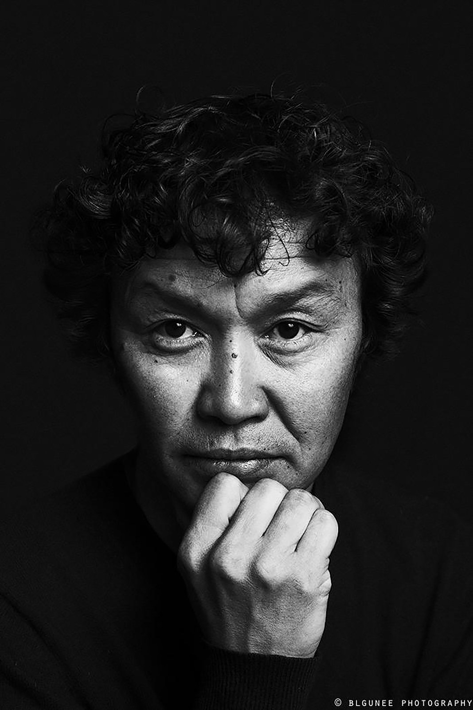

Sengedorj Janchivdorj
Director and screenwriter
Sengedorj Janchivdorj is a Mongolian director. He began his career as a theatre lighting technician. He earned a directing degree from "Bers" College of Media and Cinematic Arts. He debuted with White Night (1998) and has directed more than twenty features. The Sales Girl (2021) won the Uncaged Award for Best Feature at the New York Asian Film Festival. It also won the Golden Cyclo at Vesoul and screened at Busan, Adelaide and Barcelona. Silent City Driver (2024) won the Grand Prix at the Tallinn Black Nights Film Festival. He chairs the Mongolian Film Industry Association.
Director’s Statement
The spark for The Muralist was a single, powerful image: a man painting a masterpiece on a wall slated for demolition. In Ulaanbaatar, a city where the nomadic soul strains against the concrete of its post-Soviet sprawl, this act of defiant creation felt both urgent and deeply Mongolian. Our protagonist, Bayaraa, lives in self-imposed exile—not only from his country but from his past. His monumental mural becomes his public confession, a final, desperate attempt to reclaim a history he chose to abandon.
Building on the cinematic language of my previous film, which won the Grand Prix at the Tallinn Black Nights Film Festival, my approach is rooted in intimacy. We stay close to Bayaraa, using long, meditative takes to immerse the audience in his solitude. The film's visual texture merges gritty urban realism with poetic surrealism, where Bayaraa's only confidante is a sardonic red balloon floating above him. But the core drama unfolds in the quiet, unnerving silences between a father and the young interpreter who, unknowingly, begins to dismantle the walls around his heart.
Ultimately, The Muralist questions what we fight to preserve when everything—our cities, our art, our memories—is ephemeral. The conflict is not merely about saving a wall from bulldozers, but whether a connection can be rebuilt from the ruins of a broken promise. Through Bayaraa's desperate, beautiful act, audiences witness the struggle to forge a future from a past that cannot be erased—a profoundly human story that, while rooted in the unique tensions of modern Mongolia, speaks to any community grappling with the cost of progress.
— Sengedorj Janchivdorj